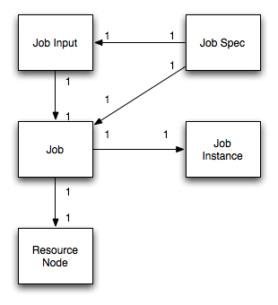

This is the user guide for the OODT Catalog and Archive Service (CAS) Resource Manager component, or Resource Manager for short. This guide explains the Resource Manager architecture including its extension points. The guide also discusses available services provided by the Resource Manager, how to utilize them, and the different APIs that exist. The guide concludes with a description of Resource Manager use cases.
The Resource Manager component is responsible for execution, monitoring and tracking of jobs, storage and networking resources for an underlying set of hardware resources. The Resource Manager is an extensible software component that provides an XML-RPC external interface, and a fully tailorable Java-based API for resource management. The critical objects managed by the Resource Manager include:
Each Job Spec contains exactly 1 Job, and Job Input. Each Job Input is provided to a single Job. Each Job describes a single Job Instance. And finally, each Job is sent to exactly one Resource Node. These relationships are shown in the below figure.
There are several extension points for the Resource Manager. An extension point is an interface within the Resource Manager that can have many implementations. This is particularly useful when it comes to software component configuration because it allows different implementations of an existing interface to be selected at deployment time. So, the Resource Manager component may submit Jobs to a custom XML-RPC batch submission system, or it may use an available off-the-shelf batch submission system, such as LSF or Load-Share. The selection of the actual component implementations is handled entirely by the extension point mechanism. Using extension points, it is fairly simple to support many different types of what are typically referred to as "plug-in architectures" Each of the core extension points for the Resource Manager is described below:
| Batch Manager | The Batch Manager extension point is responsible for sending Jobs to the actual nodes that the Resource Manager determines that it is appropriate that they execute on. A Batch Manager typically includes a client service, to communicate with remote "stubs", which run on the local compute nodes, and actual handle the physical execution of the provided Jobs. |
| Job Queue | The Job Queue extension point is responsible for queueing up Jobs when the Resource Manager determines that there are no Resource Nodes available to execute the Job on. Capabilities such as persistence, and queueing policy (e.g., LRU, FIFO) are all dealt with by this extension point. |
| Job Repository | The Job Repository is responsible for actual persistance of a Job, throughout its lifecycle in the Resource Manager. A Job Repository would handle the ability to retrieve Job and Job Spec information whether the Job is queued, or executing, or finished. |
| Monitor | The Monitor extension point is responsible for monitoring the execution of a Job once it has been sent to a Resource Node by the Batch Manager extension point. |
| Job Scheduler | The Job Scheduler extension point is responsible for determining the availability of underlying Resource Nodes managed by the Resource Manager, and determining the policy for pulling Jobs off of the Job Queue to schedule for execution, interacting with the Job Repository, the Batch Manager, the Monitor, and nearly all of the underlying extension points in the Resource Manager. |
| System | The extension point that provides the external interface to the Resource Manager services. This includes the Resource Manager server interface, as well as the associated Resource Manager client interface, that communicates with the server. |
The relationships between the extension points for the Resource Manager are shown in the below Figure.

The Resource Manager is responsible for providing the necessary key capabilities for managing job execution and underlying hardware resources. Each high level capability provided by the Resource Manager is detailed below:
This capability set is not exhaustive, and is meant to give the user a "feel" for what general features are provided by the Resource Manager. Most likely the user will find that the Resource Manager provides many other capabilities besides those described here.
There is at least one implementation of all of the aforementioned extension points for the Resource Manager. Each extension point implementation is detailed below:
To install the Resource Manager, you need to download a release of the Resource Manager, available from its home web site. For bleeding-edge features, you can also check out the resource trunk project from the OODT subversion repository. You can browse the repository using ViewCVS, located at:
http://svn.apache.org/viewvc/oodt/The actual web url for the repository is located at:
https://svn.apache.org/repos/asf/oodt/trunk/resourceTo check out the Resource Manager, use your favorite Subversion client.
The cas-resource project follows the traditional Subversion-style trunk, tag and branches format. Trunk corresponds to the latest and greatest development on the cas-resource. Tags are official release versions of the project. Branches correspond to deviations from the trunk large enough to warrant a separate development tree.
For the purposes of this the User Guide, we'll assume you already have downloaded a built release of the Resource Manager, from its web site. If you were building cas-resource from the trunk, a tagged release (or branch) the process would be quite similar. To build cas-resource, you would need the Apache Maven software. Maven is an XML-based, project management system similar to Apache Ant, but with many extra bells and whistles. Maven makes cross-platform project development a snap. You can download Maven from: http://maven.apache.org All cas-resource releases post 1.0.1 are now Maven 2 compatible. This is very important. That means that if you have any cas-resource release > 1.0.1, you will need Maven 2 to compile the software, and Maven 1 will no longer work.
Follow the procedures in the below Sections to build a fresh copy of the Resource Manager. These procedures are specifically targeted on using Maven 2 to build the software:
# mvn package
cas-resource-${version}-dist.tar.gz
bin/ etc/ logs/ doc/ lib/ policy/ LICENSE.txt CHANGES.txt
To deploy the Resource Manager, you'll need to create an installation directory. Typically this would be somewhere in /usr/local (on *nix style systems), or C:\Program Files\ (on windows style systems). We'll assume that you're installing on a *nix style system though the Windows instructions are quite similar.
Follow the process below to deploy the Resource Manager:
# cp -R cas-resource/trunk/target/cas-resource-${version}-dist.tar.gz /usr/local/# cd /usr/local ; tar xvzf cas-resource-${version}-dist.tar.gz# ln -s /usr/local/cas-resource-${version} /usr/local/resmgrOther configuration options are possible: check the API documentation, as well as the comments within the resource.properties file to find out the rest of the configurable properties for the extension points you choose. A full listing of all the extension point factory class names are provided in the Appendix. After step 7, you are officially done configuring the Resource Manager for deployment.
To run the resmgr, cd to /usr/local/resmgr/bin and type:
# ./resmgr start
This will startup the Resource Manager XML-RPC server interface. Your Resource Manager is now ready to run! You can test out the Resource Manager by submitting the following example Job, defined in the XML file below (save the file to a location on your system, such as /usr/local/resmgr/examples/exJob.xml):
<?xml version="1.0" encoding="UTF-8" ?>
<cas:job xmlns:cas="http://oodt.jpl.nasa.gov/1.0/cas" id="abcd"
name="TestJob">
<instanceClass
name="org.apache.oodt.cas.resource.examples.HelloWorldJob" />
<inputClass
name="org.apache.oodt.cas.resource.structs.NameValueJobInput">
<properties>
<property name="user.name" value="Homer!" />
</properties>
</inputClass>
<queue>quick</queue>
<load>1</load>
</cas:job>
The above job definition tells the resource manager to execute the org.apache.oodt.cas.resource.examples.HelloWorldJob, which is one of the example Jobs that is shipped with the Resource Manager. The job simply echoes the name provided in the user.name property back to the screen, saying Hello ${user.name}!.
To run the job, first you must start an XML-RPC batch stub, to execute the job on the local node. Let's assume a default port of port 2001:
# ./batch_stub 2001
The command to run the job, assuming that you started the Resource Manager on the default port of 9002:
java -Djava.ext.dirs=../lib org.apache.oodt.cas.resource.tools.JobSubmitter \
--rUrl http://localhost:9002 \
--file /usr/local/resmgr/examples/exJob.xml
You should see a response message at the end similar to:
Mar 5, 2008 10:45:26 AM org.apache.oodt.cas.resource.jobqueue.JobStack addJob
INFO: Added Job: [2008-03-05T10:45:26.148-08:00] to queue
Mar 5, 2008 10:45:26 AM org.apache.oodt.cas.resource.tools.JobSubmitter main
INFO: Job Submitted: id: [2008-03-05T10:45:26.148-08:00]
Mar 5, 2008 10:45:27 AM org.apache.oodt.cas.resource.scheduler.LRUScheduler run
INFO: Obtained Job: [2008-03-05T10:45:26.148-08:00] from Queue: Scheduling for execution
Mar 5, 2008 10:45:27 AM org.apache.oodt.cas.resource.scheduler.LRUScheduler schedule
INFO: Assigning job: [TestJob] to node: [node001]
Mar 5, 2008 10:45:27 AM org.apache.oodt.cas.resource.system.extern.XmlRpcBatchStub genericExecuteJob
INFO: stub attempting to execute class: [org.apache.oodt.cas.resource.examples.HelloWorldJob]
Hello world! How are you Homer!!
which means that everything installed okay!
The Resource Manager was built to support several of the above capabilities outlined above. In particular there were several use cases that we wanted to support, some of which are described below.

The black numbers in the above Figure correspond to a sequence of steps that occurs and a series of interactions between the different Resource Manager extension points in order to perform the job execution activity. The Job provided to the Resource Manager (labeled Process Manager in the above diagram) is sent by the Workflow Manager, another CAS component responsible for modeling task control flow and data flow. In Step 7, the job is provided to the Resource Manager, which uses its Scheduler extension point in Step 8, along with the Monitor extension point, to determine the appropriate Resource Node to execute the provided Job on (in steps 9-11). The information returned in Step 11 to the Scheduler is then used to determine Job execution ability. Once the Job is determined "ready to run", in Step 12, the Scheduler extension point uses the Batch Manager extension point (not shown) to submit the Job to the underlying compute cluster nodes, monitoring the Job execution using the Monitor extension point shown in Step 13.
Full list of Resource Manager extension point classes and their associated property names from the resource.properties file:
| Property Name | Extension Point Class |
|---|---|
| resource.batchmgr.factory | org.apache.oodt.cas.resource.batchmgr.XmlRpcBatchMgrFactory |
| resource.monitor.factory | org.apache.oodt.cas.resource.monitor.XMLAssignmentMonitorFactory |
| resource.scheduler.factory | org.apache.oodt.cas.resource.scheduler.LRUSchedulerFactory |
| resource.jobqueue.factory | org.apache.oodt.cas.resource.jobqueue.JobStackJobQueueFactory |
| resource.jobrepo.factory | org.apache.oodt.cas.resource.jobrepo.MemoryJobRepositoryFactory |